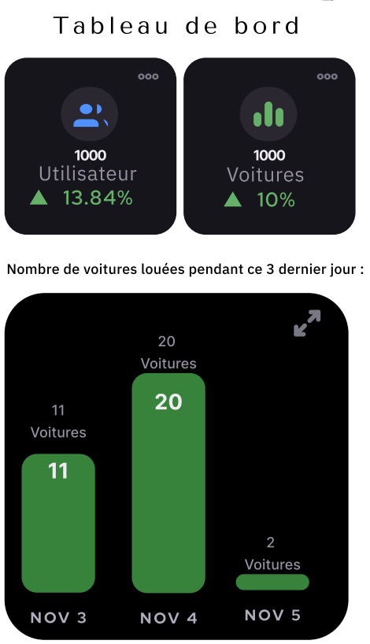

<!--
  Generated template for the DashboardPage page.

  See http://ionicframework.com/docs/components/#navigation for more info on
  Ionic pages and navigation.
-->
<ion-header>
  <ion-navbar>
    <ion-title>Dashboard</ion-title>
  </ion-navbar>
</ion-header>

<ion-content padding>
  
  <p class="t2 btn-styl"  (click)=" onGoToCarsAdmin()"><a>Voir la liste des voitures</a></p>
</ion-content>
